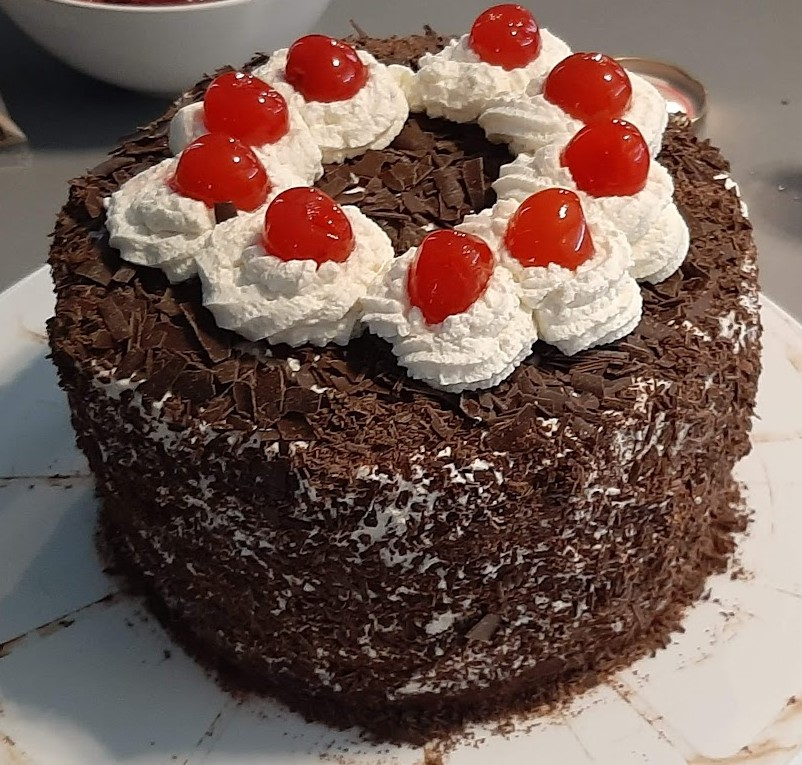

Recette du célebre forêt noire!
Recette apprise en école d'hotelerie, elle fera toujours sensations chez les petits et les grands :)
Ingrédients pour 6 personnes:
Pour le biscuit:
- 3 oeufs
- 27.5g de sucre
- 1.5c.à s. de cacao amer ou poudre de cacao non sucrée
- 75g de sucre en poudre ou sucre semoule
Pour la chantilly:
- 32.5cl de crème liquide entière (35% de MG)
- 15g de sucre glaçe
- 1 demi bocal de cerises confites
- copeaux de chocolat
Matériel:
- Batteur àmain électrique
- four traditionnel
- Moule rond
- Fouet
- Grille de refroidissement
- Saladier
Préparation:
Pour le biscuit
- Préchauffer le four à 165°C.
- Dans un saladier, battre les jaunes d'oeufs, le sucre en poudre et le sucre vanillé jusqu'à ce que la préparation fasse un ruban.
- Ajouter peu à peu la farine, la maïzena et le cacao en poudre.
- Dans un autre saladier, monter les blancs en neige très ferme avec un batteur électrique.
- Les incorporer petit à petit et très délicatement à la pâte.
- Verser dans un moule à manqué beurré (en silicone pour moi).
- Faire cuire environ 30 min.
- A la sortie du four, laisser le biscuit 5 min dans son moule.
- Après l'avoir démoulé, laisser refroidir sur une grille.
Pour la chantilly:
- Dans un grand saladier, fouetter la crème liquide.
- Lorsque la crème commence à être ferme, verser doucement le sucre glace.
Montage:
- Égoutter et réserver le jus des cerises dans un bol.
- Lorsque le gâteau est froid, le couper en 2.
- Mouiller les 2 parties intérieures du biscuit avec le jus des cerises.
- Poser la partie inférieure du gâteau sur un plat de service.
- Etaler une partie de la chantilly.
- Disposer les cerises puis poser dessus la partie supérieure du gâteau.
- Étaler le reste de chantilly sur les côtés et sur la surface du gâteau.
- Décorer votre forêt noire avec des copeaux de chocolat sur les bords et le dessus.
- Ajouter des cerises.
- Servez.